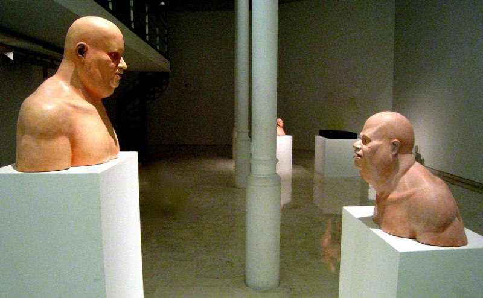
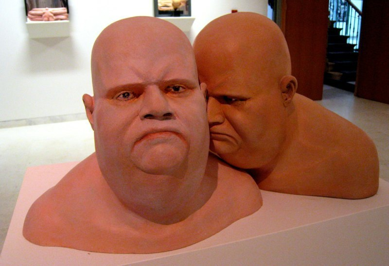
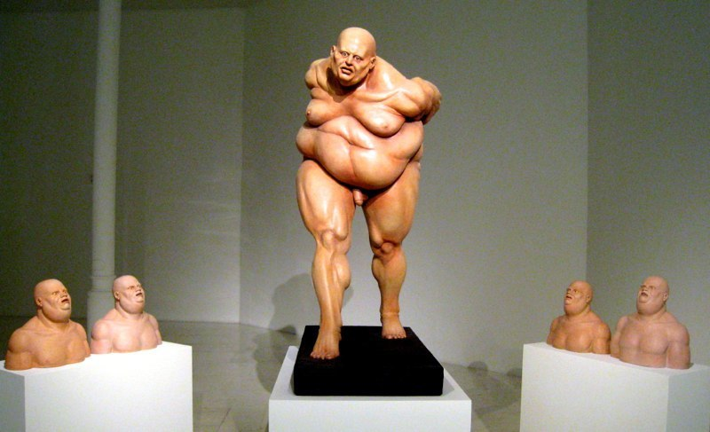
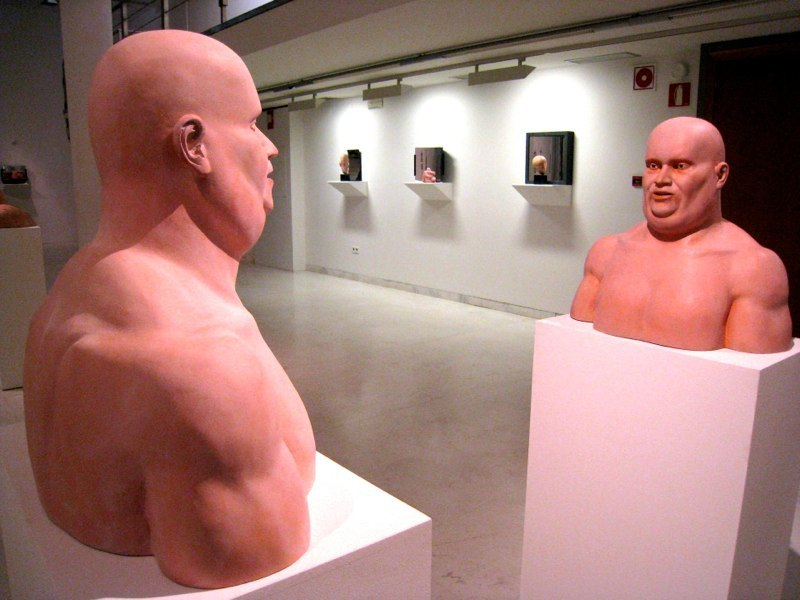

Exposición realizada en el Centro Cultural Marcos Valcárcel de Ourense y en el Museo de la
Ciudad de Móstoles.
El ser humano sigue siendo mi objetivo, pero en este caso trato de mirar hacia el interior.
Por eso no vemos cuerpos completos, sino que podemos contemplar rostros de hombres-montaña,
robustos, enormes, con expresiones variadas que tratan de transmitirnos estados de ánimo,
sensaciones y pensamientos. Porque lo que me interesa es el juego de la expresión, a mímica,
quizás el elemento más definitorio para la comunicación.
/DSC01193.jpg)
El prisionero de sí mismo
33 x 16 x 16 cm.
/IMG_1196.jpg)
Desdoblamiento de personalidad
60 x 70 x 50 cm.
¡Y tú qué miras!
30 x 30 x 25 cm.

Complementariedad rígida
50 x 45 x 25 cm/u

¡Cómo te lo digo!
30 x 38 x 25 cm.
/IMG_1242.jpg)
Contención-Explosión
50 x 57 x 33 cm/u
/IMG_1278.jpg)
Soberbia
107 x 81 x 72 cm.

El nacimiento del Superhombre

Escalada simétrica
50 x 45 x 25 cm/u